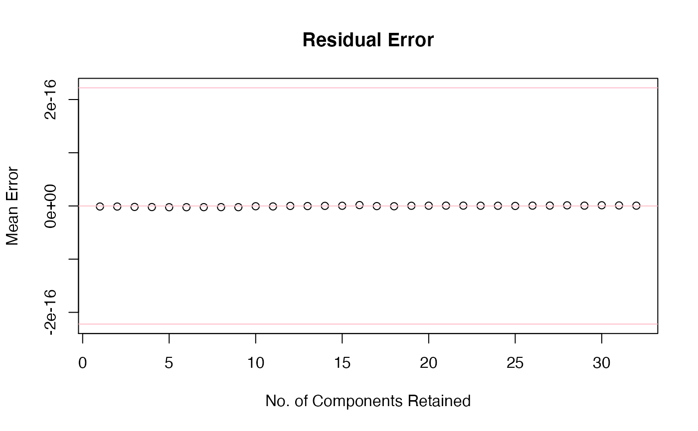

R/XtoPCAtoXhat.R
XtoPCAtoXhat.RdThis function allows one to do "round trip" PCA by reducing a matrix X
using PCA and then reconstruct an approximation (Xhat) using some or
all of the principal components.
Inspired by https://stats.stackexchange.com/q/229092/26909. We are grateful
for this post by StackOverflow contributor Amoeba.
XtoPCAtoXhat(X, ncomp = 3, scale.fun = NULL)
| X | A matrix of data, or a structure which can be coerced to a matrix. Samples should be in rows, and variables in columns. |
|---|---|
| ncomp | Integer. The number of principal components to use in reconstructing the data set. Must be no larger than the number of variables. |
| scale.fun | A function to use to scale the data. If |
A matrix with the same dimensions as X.
# Example data from ?prcomp (see discussion at Stats.StackExchange.com/q/397793) C <- chol(S <- toeplitz(.9 ^ (0:31))) set.seed(17) X <- matrix(rnorm(32000), 1000, 32) Z <- X %*% C tst <- XtoPCAtoXhat(Z) mean(tst - Z)#> [1] -3.981231e-18# Plot to show the effect of increasing ncomp ntests <- ncol(Z) val1 <- rep(NA_real_, ntests) val2 <- rep(NA_real_, ntests) for (i in 1:ntests) { ans <- XtoPCAtoXhat(X, i, sd) del <- ans - X val1[i] <- sqrt(sum(del^2)/length(del)) # RMSD val2[i] <- mean(del) } plot(val1, type = "b", ylim = c(0.0, max(val1)), main = "Root Mean Squared Deviation", xlab = "No. of Components Retained", ylab = "RMSD")me <- .Machine$double.eps plot(val2, type = "b", ylim = c(-me, me), main = "Residual Error", xlab = "No. of Components Retained", ylab = "Mean Error")